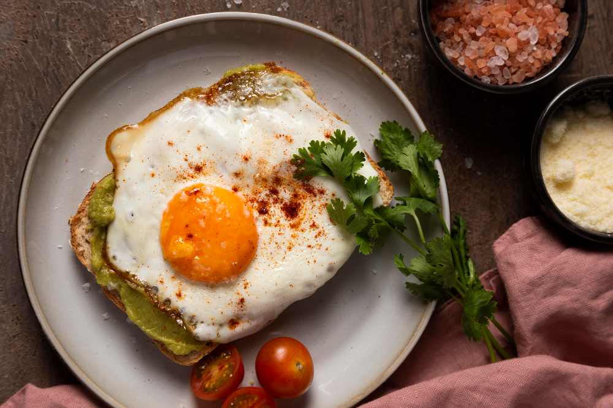
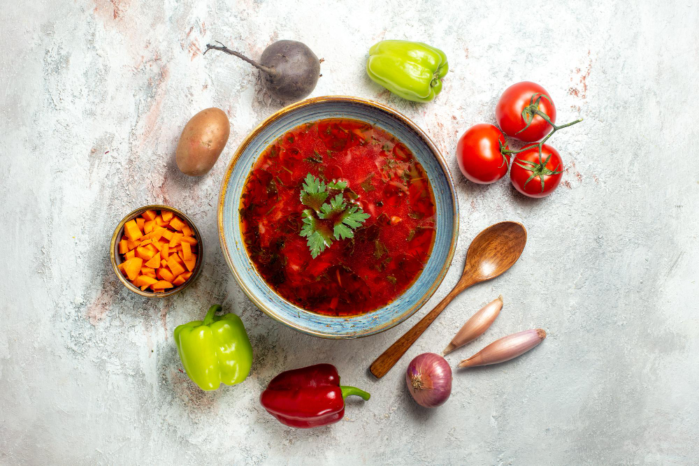

Название
Оценка
Рецепт
Фото
Яичница
10
Рецепт на russianfood

Борщ
8
Рецепт на russianfood

Куриные оладьи
8
Рецепт на russianfood
Солянка из капусты
4
Рецепт на russianfood
Печенка
2
Рецепт на russianfood